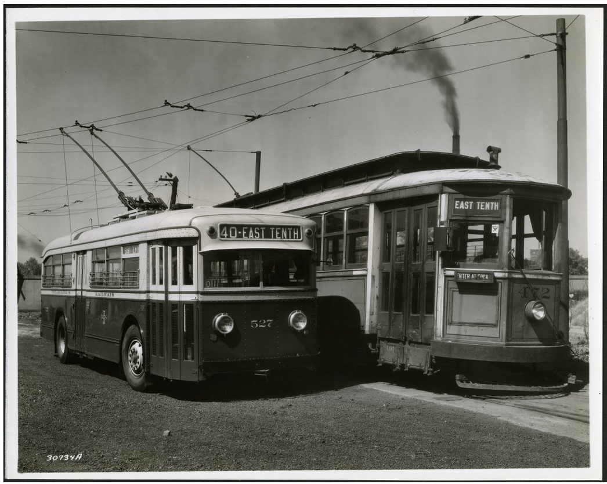

The East 10th Street Emerging Cultural District developed as a commuter suburb.
With the expansion of the electric trolleys and busses, working class families were able to own homes further from the city center. And with the increased popularity of the automobile, families on this section of 10th Street developed one of the first multimodal commuter suburbs.

The extension of transit along East 10th Street was a primary engine for the growth of Indianapolis's Near Eastside. As trolley tracks pushed eastward, isolated farmlands transformed into bustling commuter suburbs for families looking to locate outside the crowded city center.
Early public transportation was supplied by mule-drawn trolleys which reached the newly developed Woodruff Place. When the system was completely electrified with overhead wires, the streetcars and later trackless trolleys (buses drawing power from overhead wires) rapidly extended east to Sherman Drive and eventually all the way out to Emerson Avenue.
By 1930, the neighborhoods of Little Flower, Grace Tuxedo Park and Emerson Heights became the last “streetcar suburbs” as the 10th Street line ended at Emerson Avenue. In addition, starting around 1920, private automobile ownership became the norm and these furthest east communities became the early "auto-suburbs" where homes were constructed with built-in driveways and garages.
Families on this section of 10th Street developed one of the first multimodel commuter suburbs.